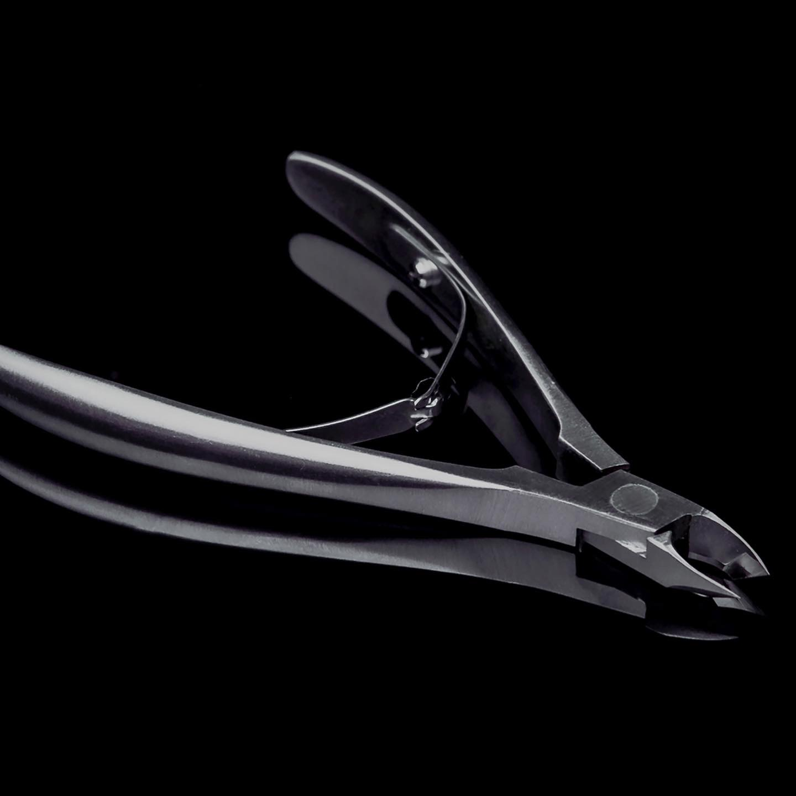
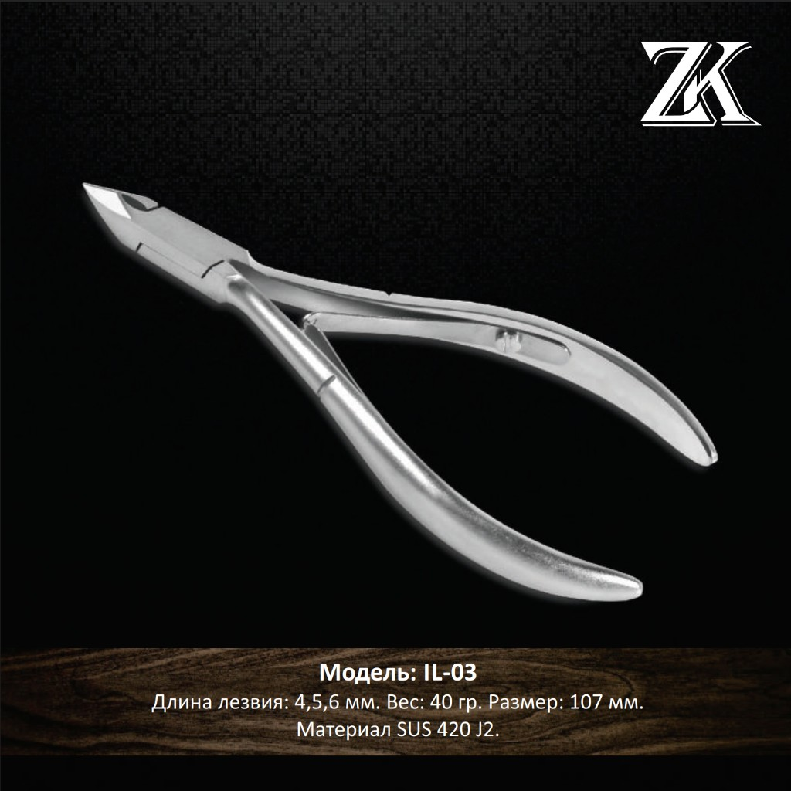
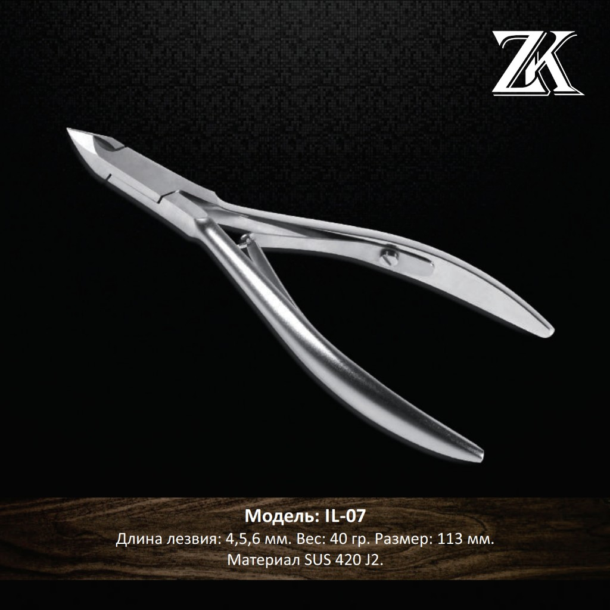
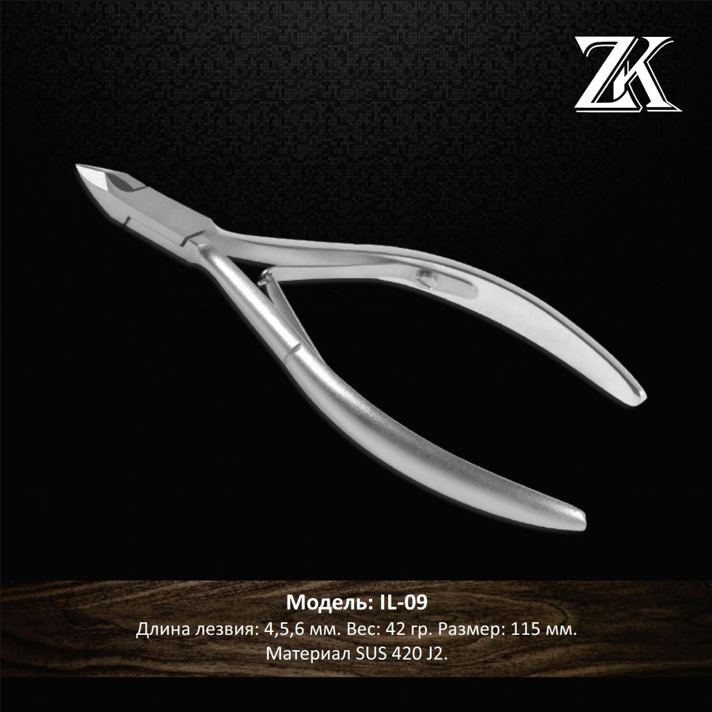
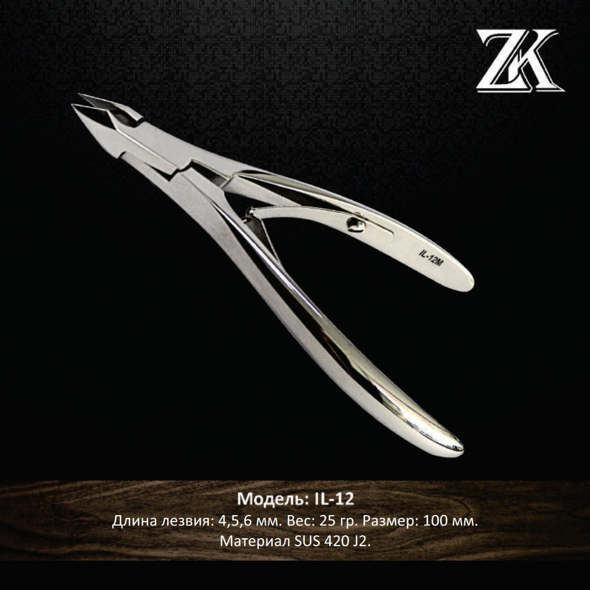
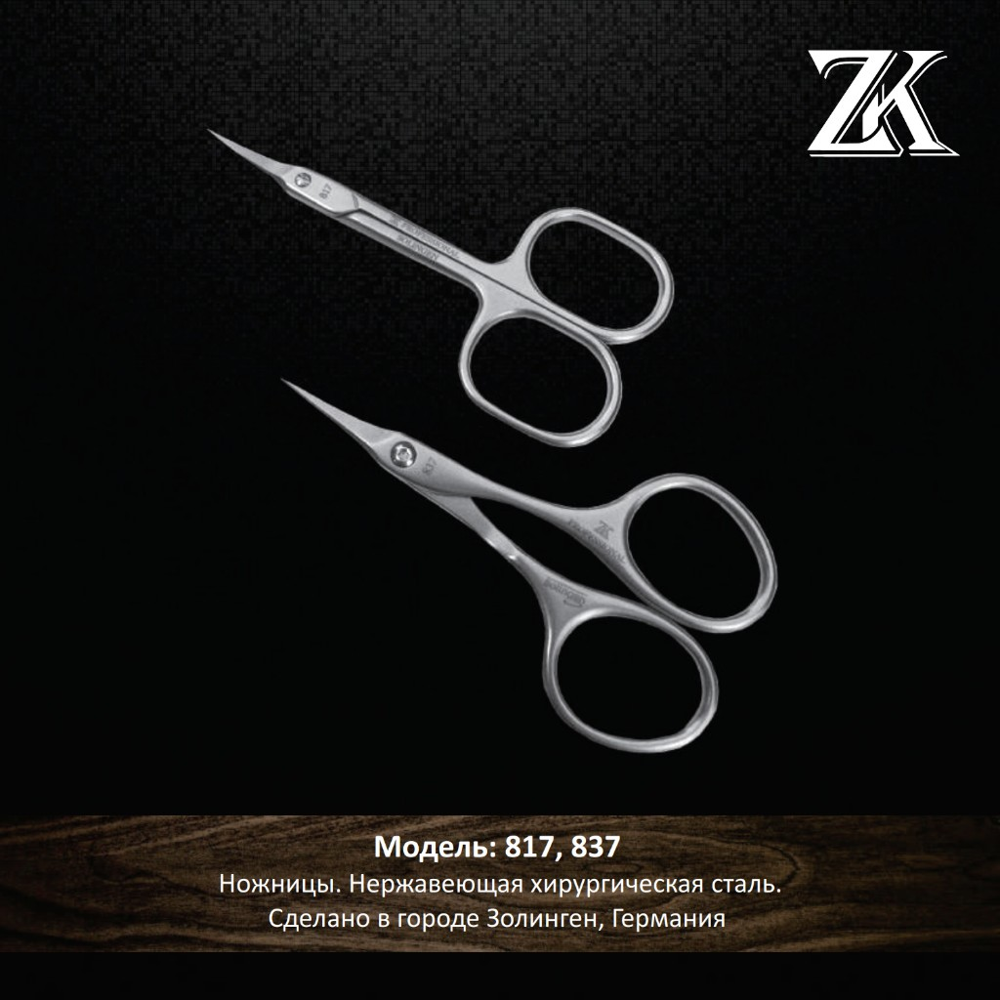

Японская сталь
Сверхпрочная сталь SUS 420 J2 с высокой устойчивостью к коррозии.
Высокопрочная сталь SUS 420 J2. Ручная заточка и мягкий ход. Кусачки IL и пушеры-шаберы — производство во Вьетнаме. Готовность к стерилизации для салонного протокола.

Сверхпрочная сталь SUS 420 J2 с высокой устойчивостью к коррозии.
Каждый инструмент проходит ручную доводку и контроль качества.
Подходит для химической и термической обработки в салонах.
Кусачки IL и пушеры-шаберы ZERK — производство во Вьетнаме, контролируемое качество.

40 г · 107 мм · лезвия 4, 5 и 6 мм.

40 г · 113 мм · лезвия 4, 5 и 6 мм.

42 г · 115 мм · лезвия 4, 5 и 6 мм.

25 г · 100 мм · лезвия 4, 5 и 6 мм.

Хирургическая сталь · Германия.